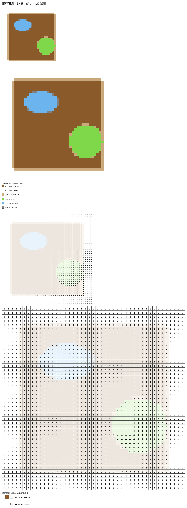
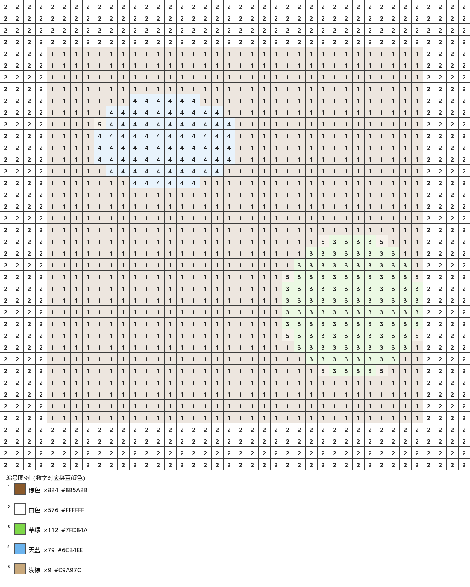

自动抠背景 · 像素网格化 · 智能色卡匹配（K-Means + 感知色差）
产出编号图纸 + 耗材清单，打开就能照着拼。纯本地处理，图片不上传。


不需要任何手动描点，全自动完成传统拼豆图纸的制作步骤
所有计算都在你的电脑 / 浏览器本地完成，照片永远不会上传服务器。
纯色背景自动透明化（CIELAB 感知色差）；复杂背景可手动框选主体。
40 / 78 色泛品牌色卡，K-Means + 一对一贪心选色，用最少种类还原最多细节。
编号图 + 每色颗数清单，买豆、对色、验收都靠它。
内置卡通滤镜把照片转为平涂色块 + 粗黑边；或接 AI 一键生成 Q 版卡通，再转图纸。
左原图右图纸并排对照；再次生成始终基于原图，不怕改坏重来。
点击格子即标记“已拼”；单色分布高亮让你一次性放完同色豆，进度一目了然。
网页版与 Windows 版操作一致
选一张主体清晰、纯色背景更佳的照片，自动推荐等比例尺寸。
选色卡、定网格大小与最多颜色数，点一下即出颜色图纸与编号图纸。
保存图纸 PNG（可打印）与耗材清单 txt，照着编号拼豆。
同网页版全部功能，另支持 AI / 普通卡通化、拼豆进度标记、单色分布高亮、PDF / Excel 导出、拼豆灵感库
点击下载即可获取桌面版（含 AI 卡通、PDF/Excel 导出），双击即可使用，无需安装。